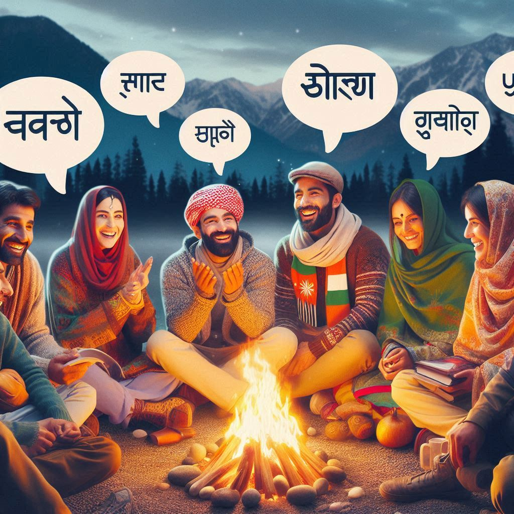
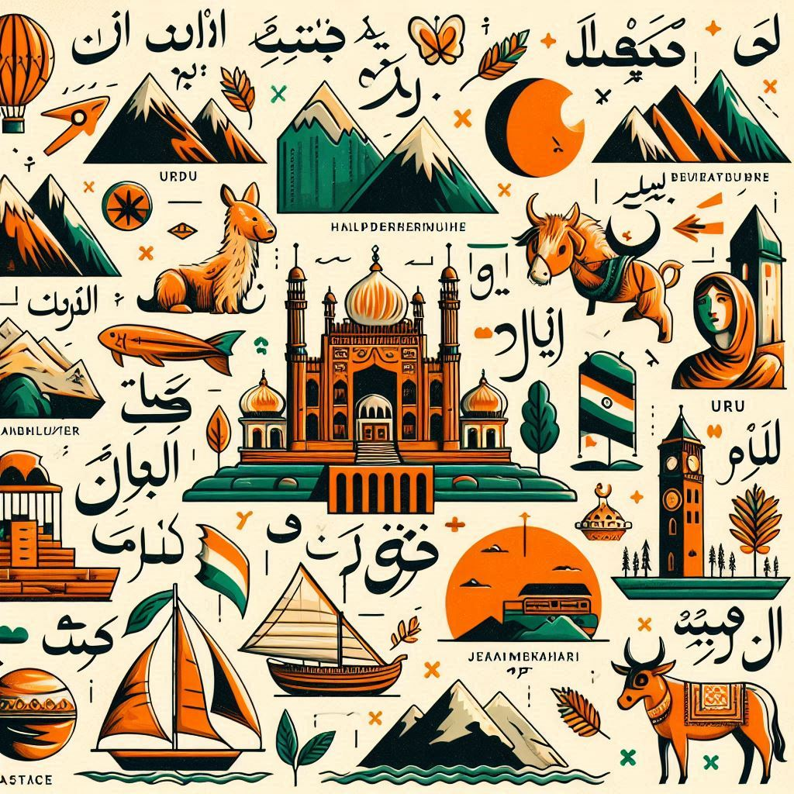

Jammu and Kashmir, known for its cultural diversity and historical heritage, is home to a variety of languages. These languages reflect the region’s distinct ethnic, cultural, and geographical influences. Here is an overview of the main languages spoken in Jammu and Kashmir:
1. Kashmiri (Koshur)
- Widely Spoken: Kashmiri is the predominant language of the Kashmir Valley and is spoken by a majority of the population there. It belongs to the Dardic subgroup of the Indo-Aryan languages.
- Official Recognition: It is one of the 22 officially recognized languages of India under the Eighth Schedule of the Constitution.
- Script: Kashmiri is written primarily in the Perso-Arabic script, although the Devanagari script is also used to some extent.
- Cultural Influence: Kashmiri literature, particularly poetry, has a rich history, with contributions from poets such as Lal Ded (Lalleshwari) and Habba Khatoon.
2. Dogri
- Regional Importance: Dogri is predominantly spoken in the Jammu region and is part of the Indo-Aryan language family. It has a significant speaker base in the Jammu division and adjoining areas.
- Official Language: In 2020, Dogri was recognized as one of the official languages of Jammu and Kashmir.
- Script: Historically written in the Takri script, Dogri is now primarily written in the Devanagari script.
3. Urdu
- Lingua Franca: Urdu serves as the official language of Jammu and Kashmir and is widely used as a medium of administration and communication. It holds a significant place as a connecting language for people across diverse linguistic backgrounds in the region.
- Script: Urdu is written in the Perso-Arabic script.
- Cultural Role: It has a rich literary tradition, with influences from Persian, Arabic, and other local languages, reflected in poetry, prose, and historical works.
4. Ladakhi (Bhoti)
- Spoken in Ladakh: Ladakhi, also known as Bhoti, is spoken in the Ladakh region (now a separate union territory). It belongs to the Tibeto-Burman language family and bears a close resemblance to Tibetan.
- Script: The language is traditionally written in the Tibetan script.
- Usage: Ladakhi is spoken predominantly by the Buddhist communities in Ladakh, and it carries strong cultural and religious significance.


5. Pahari
- Regional Language: Pahari is spoken by people living in hilly areas, particularly in regions bordering Jammu. It includes dialects spoken in the Poonch, Rajouri, and parts of the Pir Panjal range.
- Related Languages: Pahari shares linguistic traits with Punjabi and Dogri, creating a blend that varies across regions.
6. Gojri
- Nomadic Communities: Gojri is spoken primarily by the Gujjar and Bakarwal communities, who are traditionally nomadic pastoralists. It belongs to the Indo-Aryan family.
- Cultural Importance: The language plays a vital role in preserving the oral traditions, folklore, and identity of these communities.
7. Balti and Shina
- Minority Languages: Balti, spoken in certain areas of Ladakh, is related to Tibetan. Shina is another Dardic language spoken by communities in the Gilgit-Baltistan area and some regions within Jammu and Kashmir.
8. Multilingualism and Language Diversity
Jammu and Kashmir's rich linguistic diversity exemplifies its cultural pluralism, with multiple languages often coexisting in the same communities. While Kashmiri, Dogri, and Urdu are the major languages, many locals are multilingual, often speaking their regional languages alongside Hindi and English, which serve as additional means of communication and education in the region.
Conclusion
The linguistic diversity of Jammu and Kashmir reflects its cultural richness and historical heritage, with a multitude of languages speaking to its complex and varied identity.